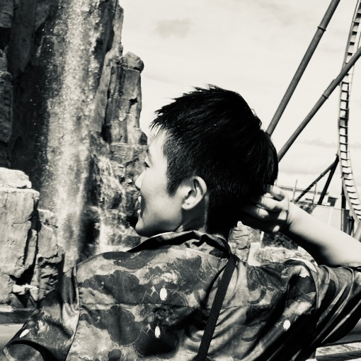

About
私について

佐々木 春佳
2014年 大学卒業後、CGデザイナーとして1年間過ごす。その後は、一般事務の仕事につく。
2018年 百貨店でのデザイン業務を担ったため、改めてデザインの楽しさを知る。
2022年 デザインメインの仕事につきWebデザインにも興味を持つ。
2026年 Webデザイナーに向けて勉強中。今に至る。
スキル
- Illustrator
- Photoshop
- Premiere Pro
- After Effects
- JW CAD
- HTML&CSS（勉強中）